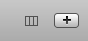
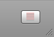

A column is a vertical section of your list document with a label at the top. The label can be anything you like (as long as there isn't another column with the same label), and you can add as many columns as you like to a Delectus document. You can remove a column at any time.
To add a column, click the Add Column (the "+") button at the top right corner of the Delectus window:

When you click the Add Column button, Delectus asks you for a label for the new column. After you supply a label, Delectus creates the new column. If you give it a label that's already in use in your list, then Delectus refuses it and displays a message explaining that you can't use a label if it's already being used.
Removing Columns
You can remove a column using the List menu. Select the column you want to delete, then pull down the List menu and choose Delete Column. Delectus removes the selected column. If no column is selected then Delectus doesn't enable the Delete Column item.
Renaming Columns
What if you decide that you want to change one of the column labels? It's easy to do: click the label at the top of the column to select it, then pull down the List menu and choose Rename Column. Delectus asks you for a new label, and then changes the column to use it. Remember: a document cannot have two columns with the same label. If you try to rename a column to use a label that's already in use, Delectus refuses.
Names of Deleted Columns
When you delete a column, Delectus doesn't really remove it completely. It marks the column deleted and hides it, but it keeps the data, in case you change your mind. You can see if there are any deleted columns in your document by clicking the Show Deleted Items button at the bottom right corner of the window.

Click the Show Deleted Items button to turn it on, and it reveals any deleted columns and rows in the document. It also displays a count of deleted columns and rows next to the button. Deleted items are displayed in red.
Because Delectus doesn't really remove a column when you delete it, you can't reuse the label of a deleted column. The column doesn't show up in your list unless you turn on the Show Deleted Items button, but it's still there in the document, so Delectus can't reuse the label.
If you want to permanently remove any deleted items that may be in your document, you can use the Purge Deleted Items menu: pull down the List menu and choose Purge Deleted Items. Delectus displays a dialog to give you a chance to change your mind before permanently removing the items; if you confirm, then it removes all deleted columns and rows. Make sure that's what you want to do; once you confirm that you want to purge the deleted items, they're gone forever.
After you've purged deleted items, the column labels are no longer in use, and you can reuse them if you like.